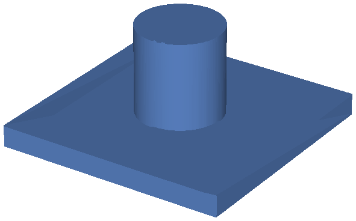
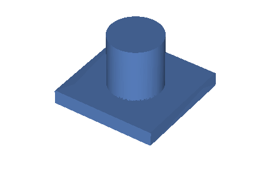
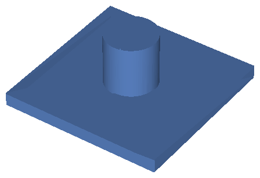
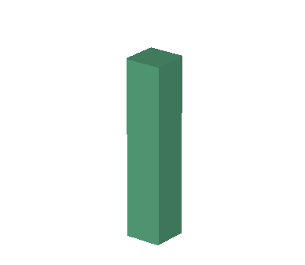
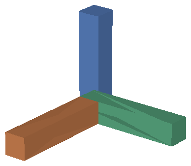

An engineer says “widen the plate.” A language model rewrites a small CAD DSL, a compiler replays it on the OCCT kernel, and a four-stage loop checks the result. The hard part is not generating geometry — it is making sure that after the edit, every reference still points at the thing it named.

base = sketch(plane=XY, rect=[w=110, h=110]); plate = extrude(profile=base, length=10); sk = sketch(plane=XY, circle=[center=plate.axis, r=20]); boss = extrude(profile=sk, length=52);
The boss is placed on plate.axis — a name, not a coordinate. Every render on this
page is the actual solid this compiler produced.
B-rep kernels do not promise that Face 3 is still Face 3 after you change a
parameter and regenerate. This is the Topological Naming Problem, and it is why parametric CAD
files break in ways that look arbitrary.
For a language model editing CAD, it is worse than an inconvenience. The model has to express “the hole on the top face” in a form that survives its own next edit. If it emits an index, the reference is dead the moment anything upstream moves. If it emits a coordinate, the reference was never alive — it just happened to coincide.
So the language comes first. Before you can measure whether a model edits CAD correctly, you need a representation in which “correctly” is even expressible.
Each statement creates or modifies one feature. Features are named at the point they are created, and
every later statement refers to them by that name or by a derived role — body.face_top,
hole1.axis, pat1[2]. There are seven roles in v1, and which operation exposes
which is fixed by the spec.
identifier ::= [a-zA-Z_][a-zA-Z0-9_]*
reference ::= identifier ("." identifier)* ("[" (number | "*") "]")?
statement ::= feature_def | edit_op
feature_def ::= identifier "=" operation "(" args ")" ";"
value ::= number unit? | reference | string
| "[" value* "]" # spacing=[10, 20, 30]
| "[" args "]" # circle=[center=origin, r=20]
| operation "(" args ")"
The grammar is deliberately small and regular. That is not minimalism for its own sake: a 7–14B model has to emit it correctly under quantization, and every keyword is a chance to get the syntax wrong.
sk1 = sketch(plane=XY, circle=[center=origin, r=20]); body = extrude(profile=sk1, length=200); # 1 — lengthen: 200 → 250 edit(target=body, set=length, value=250); # 2 — drill a hole on the top face h1 = pocket(on=body.face_top, circle=[center=body.axis, r=6], depth=180); # 3 — pattern it around the axis p1 = pattern(feature=h1, type=circular, count=4, angle=90); # 4 — cylinder → hex prism, which forces re-binding replace(target=body, with=extrude(profile=hex(r=20), length=250)); # 5 — chamfer the top edge chamfer(on=body.edge_top, dist=1.5);
Step 4 is the interesting one. Replacing a feature changes which roles exist, so every downstream reference has to be re-bound or the program has to be rejected. The registry refuses a replacement that would strip a role something later still depends on.
Here is the whole argument in one comparison. The only change between these two models is the plate's
width — w=80 becomes w=128. Nothing about the boss is touched.


Boss centre, measured from the compiled solid:
w = 80 → (40, 40)
w = 128 → (64, 64)
Written as a coordinate, the boss would still sit at (40, 40) and hang off the corner. Written as
plate.axis, it is re-resolved against the new solid every time the program is
compiled.
dsl/compiler.py at the same scale. The plate grows; the boss
stays on the axis without being edited.
Symbolic names buy nothing if the compiler quietly builds different geometry than the program
describes. Until recently it did: sketch(plane=...) was parsed, stored, and never read, so
every solid was built on XY and extruded along +Z no matter what the source said.


The same three-statement program, compiled before and after the fix. Before, all three bodies coincide — you are looking at three solids stacked in exactly the same place.
XY → (0,0,0)–(14,14,70)
XZ → (0,−70,0)–(14,0,14)
YZ → (0,0,0)–(70,14,14)
Nothing raised. A verification loop scoring that model would have marked geometry contradicting its own source as correct.
An edit that compiles is not an edit that is right. Each result goes through four stages; failures are fed back for self-repair up to three times, and only what still looks uncertain is escalated to a person.
Re-run the program and check B-rep validity — is the solid well-formed at all?
Wall thickness, hole-to-edge distance, dimensional tolerance, measured against thresholds in the project config.
Render before and after, and have a vision model score whether the change matches what was asked.
Is it still the same kind of part? Reuses the part classifier from the prior project stage.
Stages 2 and 3 are why the fixes in §04 mattered before anything else: both measure the compiled solid, so both inherit whatever the compiler got wrong.
This is a twelve-month research project currently at M2 of twelve. The DSL layer is real and tested against the kernel; the model, verification and deployment layers are scaffolded and not yet implemented. The table is the honest version.
| Component | State | Detail |
|---|---|---|
dsl/ parser, AST, registry | working | Hand-written recursive descent, no parser generator. Grammar frozen at v1. |
dsl/compiler.py kernel backend | partial | sketch and extrude execute on FreeCAD/OCCT. pocket, fillet, chamfer, pattern, mirror and history rebuild are the current milestone. |
eval/ chain scoring | partial | Sequential-edit harness runs; the IoU metric is not implemented. |
editor/ model and context | scaffold | Fine-tuning and inference are M3+. |
verify/ four-stage loop | scaffold | M6. |
deploy/ quantization, review UI | scaffold | M10. |
edit() — the project's primary operation, and the one every parameter-level metric
depends on — does not yet run against the kernel. It needs a replayable feature history, which is
the largest single gap in the current milestone.
These are the acceptance targets for the twelve months, not measured results. Nothing in this table has been measured yet — the model layer does not exist. They are here because they define what counts as finished.
| Metric | Target |
|---|---|
| Parameter-level edit — IoU / parse rate | ≥ 0.93 / ≥ 96% |
| Compound edit — IoU / parse rate | ≥ 0.80 / ≥ 85% |
| Reference-break rate over a 5-step chain | < 5% |
| Defect recall / false-positive rate | ≥ 95% / ≤ 10% |
| Auto-confirm rate (human sees ≤ 20%) | ≥ 80% |
| Latency per edit, single 24 GB GPU | ≤ 30 s |
All targets are measured on a held-out set of real conveyor parts. Scores on synthetic data do not count as passing — which is also why the whole system has to run offline on an air-gapped intranet, on one GPU.